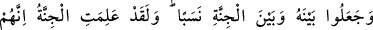
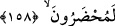
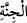

gerektiğini bildirmek için muhatap sığasından gâib sığasına iltifat edip şöyle
buyurmuştur:
158. Allah ile cinler arasında da bir soy birliği uydurdular. Andolsun, cinler de
kendilerinin hesap yerine götürüleceklerini bilirler.
“Allah ile cinler arasında da bir soy birliği uydurdular. Andolsun,” onların
kendilerine tâzim ederek Allah ile aralarında soy birliği kurduğu “cinler” yani melekler
“de kendilerinin” kâfir olan cinlerin “hesap yerine götürüleceklerini” ve cehennemde
hazır tutulup bu konudaki yalan ve iftiralarından dolayı orada azap edileceklerini
“bilirler.”
Kâmûs’ta der ki: “
” kelimesi, cin ve melekler topluluğunu ifade eder.” Burada
kastedilen meleklerdir. Gözlerden örtülüp gizlendikleri ve görülmedikleri için
kendilerine “cinnet” denilmiştir. Bu mânâda anne karnındaki örtülü olan yavruya da
“cenin”; akıl gizlenip örtüldüğü için deliliğe “cünûn”; deliye “mecnûn”; sahibini örtüp
koruduğu için kalkana “cünnet”; ağaçlarıyla yeri örttüğünden dolayı her ağaçlı bahçeye
de “cennet” denilmiştir. Gözle görünmeyen varlıklar melekleri ve bilinen cinleri
kapsamaktadır. Denilir ki cinler birdir. Ancak pis, azgın ve kötü olanlar şeytan; temiz ve
iyi olanlar ise melektir.
Râğıb der ki, varlıklara iki vecih üzere “cin” denilir. Birincisi insana mukabil olarak
bütün duyu organlarından gizlenen varlıklara “cin” denilir. Buna göre melekler ve
şeytanlar da bu tanıma dahildir. Sonuçta her melek cindir ancak her cin melek değildir.
Denilir ki ruhanilerin bazıları cindir. Zira ruhaniler üç kısımdır. Hayırlılar vardır bunlar
meleklerdir şerliler vardır bunlar şeytanlardır. Bir de ikisinin arasında olanlar vardır.
Bunların bazıları hayırlı bazıları da şerlidir. Allah Teâlâ’nın şu kavli buna delâlet eder:
“(Resûlüm!) De ki: Cinlerden bir topluluğun (benim okuduğum Kur’an’ı) dinleyip
de şöyle söyledikleri bana vahyolunmuştur: Gerçekten biz, doğru yola ileten
hârikulâde güzel bir Kur’an dinledik de ona iman ettik. (Artık) kimseyi Rabbimize
asla ortak koşmayacağız. Hakikat şu ki, Rabbimizin şânı çok yücedir. O, ne eş ne de
çocuk edinmiştir. Doğrusu bizim beyinsiz olanımız (iblis veya azgın cinler), Allah
hakkında pek aşırı yalanlar uyduruyormuş. Halbuki biz, gerek insanlar gerekse
cinler Allah hakkında asla yalan söylemezler, sanmıştık. Şu da gerçek ki,
insanlardan bazı kimseler, cinlerden bazı kimselere sığınırlardı da, onların
taşkınlıklarını arttırırlardı. Onlar da sizin sandığınız gibi, Allah’ın hiç kimseyi